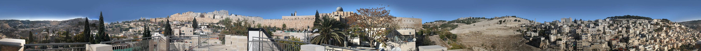
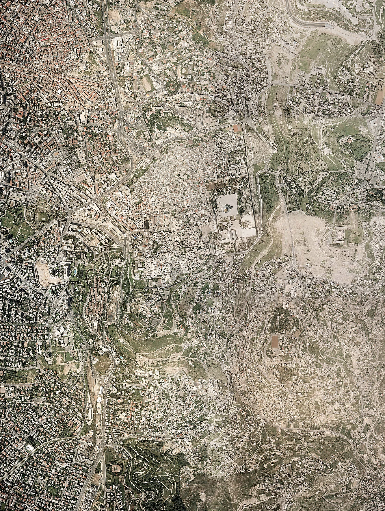

ORIGINAL PHOTO · 5,394 × 400 PX
Look across the city
Click and drag, swipe, or use the arrow buttons to move across the archived photographic panorama. This is the actual image extracted from the Flash viewer, not a modern replacement.

↔ DRAG TO EXPLORE
50%

ANOTHER RECOVERED VIEW
Ancient Jerusalem from above
Additional original Flash graphics include aerial photography, ancient maps, and imagery used by the virtual tour. These are collected in the image gallery.
See recovered images →